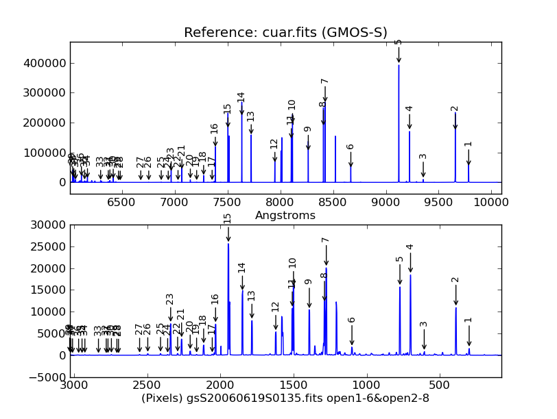
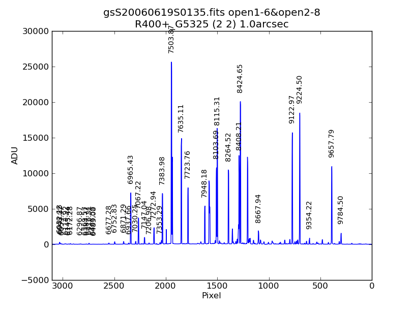

from astrodata import AstroData # Importing the Wavecal class. from wavecal import Wavecal
# 'gemini_arc.fits' is a generic name for any Gemini instruments # producing a ARC image. The file needs to ne properly 'prepared' and # flat reduced if necessary. ad = AstroData("gemini_arc.fits") wc = Wavecal(ad) # To see the parameter values wc.info() # For an explanation on the parameters please see: help Wavecal # Do the wavecal wc.wavecal() # Plot the results. wc.plot_ref()# The upper subplot shows the reference arc spectra for the # wavelength range of the input arc data. The lower subplot # show the input spectra for the middle row (actually a median # of 10 to 20 rows about the middle row). The numbers should point to # the same feature indicating a good match.

# Display the peak pixel coordinate, fit and wavelength list. The sequence numbering indicates # the numbers on the plot. wc.features() 1 299.262 9784.503 2 389.680 9657.786 3 606.542 9354.220 4 700.034 9224.499 5 772.719 9122.967 6 1100.694 8667.944 7 1276.037 8424.647 8 1288.224 8408.210 9 1391.998 8264.522 10 1500.162 8115.311 11 1508.525 8103.693 12 1621.481 7948.176 13 1784.581 7723.761 14 1849.380 7635.106 15 1945.178 7503.869 16 2033.011 7383.980 17 2055.706 7353.293 18 2114.457 7272.936 19 2162.686 7206.980 20 2206.617 7147.042 21 2265.301 7067.218 22 2292.397 7030.251 23 2340.139 6965.431 24 2360.478 6937.664 25 2409.310 6871.289 26 2496.485 6752.833 27 2552.269 6677.282 28 2696.431 6483.083 29 2707.655 6466.553 30 2745.228 6416.307 31 2768.529 6384.717 32 2780.388 6369.575 33 2833.609 6296.872 34 2926.450 6172.278 35 2946.025 6145.441 36 2969.234 6114.923 37 3010.770 6059.373 38 3022.234 6043.223 39 3030.519 6032.127
# The pixel and wavelength are available as members: print wc.pix print wc.user
# The member 'z' is an object containning informatio about the fitting. A summary # is available in wc.info() # Printing the fitting function, order and coefficients. print 'Fitting function name: ',wc.z.fitname print 'Fitting order used: ', wc.z.order print 'Fitting coefficient: ', wc.z.coeff
print wc.z(wc.xpeaks)
# Run pix2ref method to get reference lines that match the # input pixel array. See 'help wc.pix2ref' for explanation. # 'pw' is a list of tuples (pixe, reference line) pw = wc.pix2ref(pixel_array)